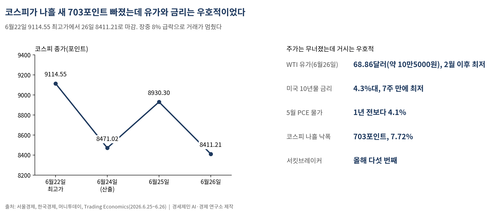
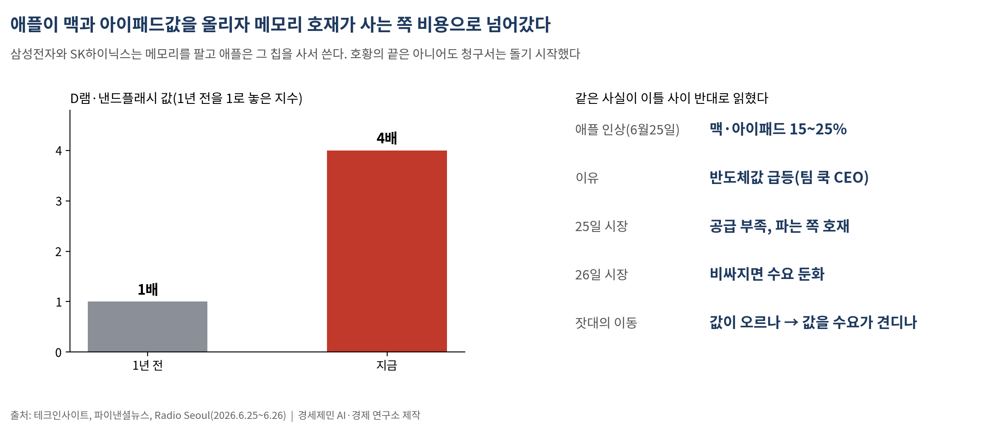
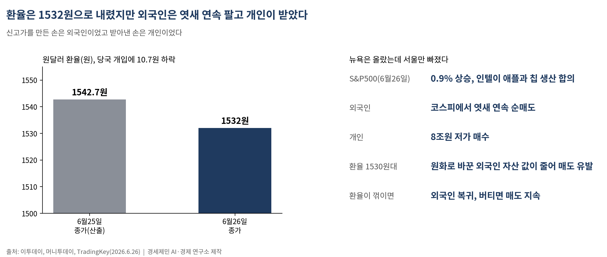
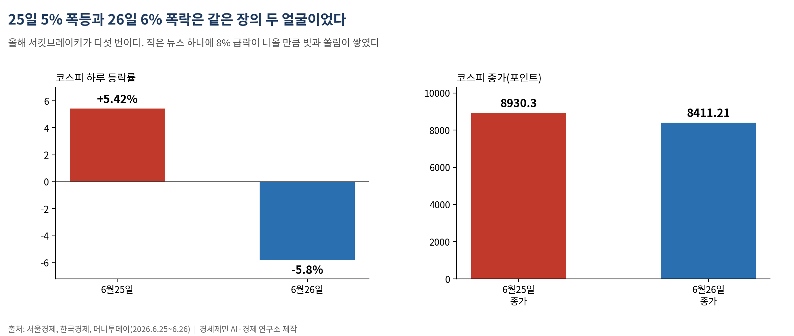
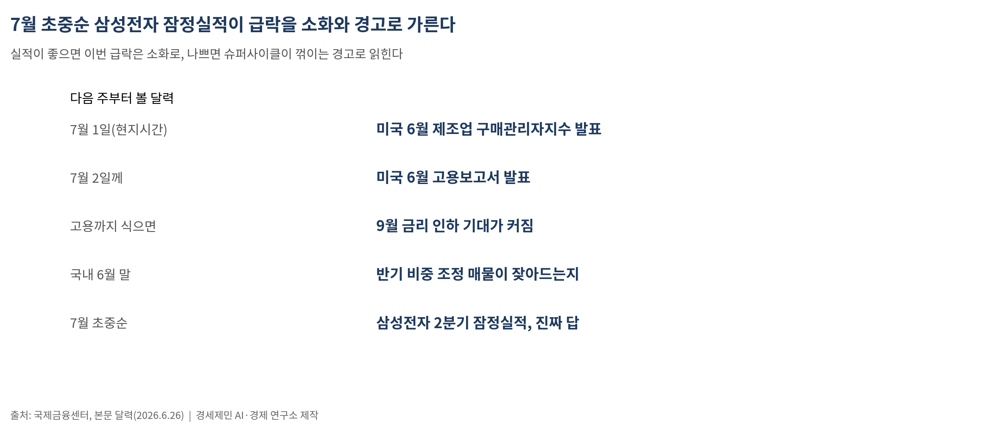

코스피, 사상 최고가 주에 서킷브레이커 급락…다음 주 삼성 실적이 분기점
9114.55 찍은 코스피가 나흘 만에 8411.21로, 장중 8% 급락에 올해 다섯 번째 거래 중단

유가도 금리도 물가도 우호적인데 지수만 무너졌다, 펀더멘털 아닌 수급이 흔든 하락
신고가를 만든 손은 외국인, 8조원어치 떠안은 손은 개인이었다
코스피가 사상 최고가를 쓴 바로 그 주에, 거래마저 멈췄다. 6월 22일 9114.55로 역대 최고를 찍은 지수는 26일 8411.21로 마감했다. 나흘 새 703포인트, 7.72% 빠졌다. 장중 8% 급락에 올해 다섯 번째 서킷브레이커가 걸렸다.
그러나 같은 날 밤 뉴욕은 올랐다. 이 어긋남이 이번 급락의 성격을 말한다. 세계가 무너진 게 아니라 한국만 멈췄다.
1. 주가는 무너졌는데, 펀더멘털은 멀쩡했다

급락의 정체는 같은 시점의 다른 숫자에 있다. 주가가 빠지는 동안 거시는 오히려 우호적으로 돌아섰다. 26일 서부텍사스산 원유는 배럴당 68.86달러(약 10만5000원)로 2월 이후 가장 낮았다. 미국과 이란의 평화협상이 유가를 끌어내렸다. 미국 10년물 국채금리는 4.3%대로 7주 만에 가장 낮았다. 5월 개인소비지출(PCE) 물가는 1년 전보다 4.1%로 높지만, 떨어진 유가가 다음 물가를 누른다.
값이 싸지고 금리가 내리는 것은 보통 주식에 호재다. 그런데 주식만 무너졌다. 실적이 나빠진 하락과 돈이 빠진 하락은 다르다. 이번은 뒤쪽이다.
2. 애플의 청구서, 슈퍼사이클이 국면을 바꿨다

방아쇠는 애플이 당겼다. 애플은 25일 맥과 아이패드 값을 15~25% 올렸다. 팀 쿡 최고경영자는 반도체값 급등을 이유로 들었다. 테크인사이트에 따르면 디(D)램과 낸드플래시 값은 1년 새 네 배로 뛰었다.
이 뉴스의 무게는 가격표가 아니라 국면 전환에 있다. 메모리를 파는 쪽과 사서 쓰는 쪽은 처지가 다르다. 삼성전자와 에스케이하이닉스는 메모리를 팔고, 애플은 그 칩을 사서 제품에 넣는다. 지금껏 시장은 값이 오르는 것을 파는 쪽 호재로만 읽었다. 애플의 인상은 그 호재가 사는 쪽 비용으로 넘어가기 시작했다는 신호다.
그래서 같은 사실이 이틀 사이 반대로 읽혔다. 25일에는 '공급이 부족해 오르는 호재'였고, 26일에는 '비싸지면 사는 쪽이 줄어드는 수요 둔화'였다. 메모리주의 잣대도 '값이 오르느냐'에서 '오른 값을 수요가 견디느냐'로 옮겨 간다. 호황의 끝은 아니어도, 청구서는 돌기 시작했다.
3. 서울만 빠진 까닭은 환율에 있다

같은 날 뉴욕은 올랐다. 26일 스탠더드앤드푸어스(S&P) 500은 0.9% 올랐다. 트럼프 중재로 애플과 칩 생산에 합의한 인텔이 급등했다. 애플발 우려는 한국 반도체를 때렸고, 인텔 합의는 미국 반도체를 띄웠다.
한국만 빠뜨린 힘은 수급이다. 외국인은 26일에도 코스피에서 조 단위를 팔았다. 엿새 연속 매도였다. 그 물량은 개인이 받았다.
신고가를 만든 손은 외국인, 받아낸 손은 개인이다. 정보와 자금에서 앞선 쪽이 고점에서 넘기고 뒤늦은 쪽이 떠안는 장면이 되풀이됐다. 개인의 8조원 저가 매수가 바닥인지 중간 기착지인지는 개인이 쥔 패가 아니다. 그 답은 환율과 실적이 쥐고 있다.
외국인 매도의 바닥에는 환율이 있다. 26일 원달러 환율은 당국 개입에 10.7원 내린 1532.0원에 마감했지만, 1530원대는 여전히 높다. 환율이 높으면 원화로 바꾼 외국인 자산 값이 줄어 매도를 부른다. 지금 봐야 할 것은 지수가 아니라 환율이다. 환율이 꺾이면 외국인이 돌아오고, 버티면 매도가 이어진다.
4. 신고가에 쌓인 것은 기대만이 아니었다

이번 급락은 강세장의 체질도 드러냈다. 올해만 서킷브레이커가 다섯 번이다. 작은 뉴스 하나에 8% 급락이 나온다는 것은, 오르는 동안 빚과 쏠림이 그만큼 쌓였다는 뜻이다. 신고가에 올라탄 레버리지가 애플 뉴스라는 방아쇠에 한꺼번에 반응했다. 25일 5% 폭등과 26일 6% 폭락은 같은 장의 두 얼굴이다. 오를 때 빚내 쫓아 사는 일이, 이런 장에서 가장 비싼 실수다.
5. 다음 주, 삼성이 답을 쥔다

이 하락이 소화인지 경고인지는 다음 주에 처음 갈린다. 현지시간 7월 1일 6월 제조업 구매관리자지수, 7월 2일께 6월 고용보고서가 나온다. 유가와 금리가 내린 지금 고용까지 식으면 9월 금리 인하 기대가 커진다. 외국인 매도를 멈출 환율의 우군이다.
국내에서는 6월 말 반기 비중 조정 매물이 잦아드는지가 변동성을 가른다. 그러나 진짜 답은 실적이다. 7월 초중순 삼성전자 2분기 잠정실적이 애플발 수요 둔화 우려를 숫자로 가른다. 그 숫자가 좋으면 이번 급락은 소화로, 나쁘면 슈퍼사이클이 꺾이는 경고로 읽힐 것이다.
올랐다가 빠진 것과, 왜 올랐고 왜 빠졌는지 아는 것은 다른 문제다. 헤드라인을 따라 사고파는 일과, 환율과 실적을 직접 펴 드는 일은 다른 결과로 이어진다.
※ 이 기사는 인공지능 프로그램 클로드 오푸스 4.8을 활용해 작성했다.
참고문헌
· "[코스피] 459.28포인트(5.42%) 오른 8930.30 마감", 서울경제, 2026.6.25., https://www.sedaily.com/article/20060141
· "검은 금요일 코스피, 5.8% 밀려 8400선 후퇴…서킷브레이커 발동", 한국경제, 2026.6.26., https://www.hankyung.com/article/2026062602766
· "[속보] 코스피, 1단계 서킷브레이커 발동…올해 다섯번째", 머니투데이, 2026.6.26., https://www.mt.co.kr/stock/2026/06/26/2026062612033353957
· "외국인 삼전닉스 조단위 매도에…코스피, 14번째 매도 사이드카", 머니투데이, 2026.6.26., https://www.mt.co.kr/stock/2026/06/26/2026062611291077538
· "메모리 가격 급등에…애플, 맥·아이패드 100~300달러 인상", Radio Seoul, 2026.6.26., https://www.radioseoul1650.com/archives/144427
· "애플, 맥·아이패드 정가 20~25% 기습 인상...아이폰 가격 유지", 파이낸셜뉴스, 2026.6.26., https://www.fnnews.com/news/202606260823109359
· "트럼프 행정부 중재, 인텔과 애플 칩 제조 합의 도달, 주가 13% 이상 급등", TradingKey, 2026.6.26., https://www.tradingkey.com/kr/analysis/stocks/us-stocks/261876395
· "[환율마감] 당국개입+네고물량…원·달러 급락 '5거래일만 하락'", 이투데이, 2026.6.26., https://www.etoday.co.kr/news/view/2597716
· "Crude Oil Price", Trading Economics, 2026.6.26., https://tradingeconomics.com/commodity/crude-oil
· "US 10 Year Treasury Yield", Trading Economics, 2026.6.26., https://tradingeconomics.com/united-states/government-bond-yield
· "[6.26] 미국 5월 PCE 물가 발표, 전월비 둔화 예상", 국제금융센터, 2026.6.26., https://www.kcif.or.kr/annual/reportView?rpt_no=33253
#주식공부 #코스피 #서킷브레이커 #메모리슈퍼사이클 #애플 #환율 #외국인순매도 #개인투자자 #삼성전자실적 #금리인하